University of Szeged | Szegedi Tudományegyetem · 2026
Toward Autonomous Spatial Intelligence
From Agentic Governance to Discrete Global Grids
Levente Juhász, Ph.D.
Geospatial Analytics, Technology and Open Research (GATOR) Lab
University of Florida
gatorlab.io
The Evolution of GIS
We are moving from analytical tools to autonomous agents.

The Reasoning Engine: LLMs & Tokens
Large Language Models are next-token prediction engines. They do not process words, numbers, or geometry — they process discrete tokens.
"Geospatial Analysis" → broken into discrete chunks:
Geo spatial _Analysis
Semantics emerge from the probabilistic co-occurrence of tokens — not from any explicit mathematical representation.
Key implications for GeoAI:
- LLMs have no built-in spatial awareness — geography must be encoded structurally.
- Code generation works well because programming languages have a consistent token grammar.
- Continuous geographic data (floats) breaks this grammar.
Context & The Context Window
A Context Window is the working memory of an LLM. It defines the maximum number of tokens an AI can process and remember at one time.
What fills the Context Window?
- System Instructions: Governance and tools
- Conversation History: Prior reasoning steps
- Data & Geometries: Inputs and tool outputs
The Geospatial Bottleneck
Geospatial data is highly verbose. A single detailed GeoJSON polygon can consume tens of thousands of tokens.
- Lost in the Middle: Massive geometries flush out the agent's reasoning context.
- Token Limits: Exceeding the window causes task failure.
Beyond Chatbots: Agentic AI
A standard LLM generates text and stops. An agent operates in a goal-directed control loop — enabling it to use external tools, read results, and self-correct.
💡
Think
Decompose the problem into sub-tasks
⚙️
Act
Execute a tool (Python, DuckDB, API)
👁️
Observe
Read the result or error output
🔄
Update
Self-correct and plan the next step
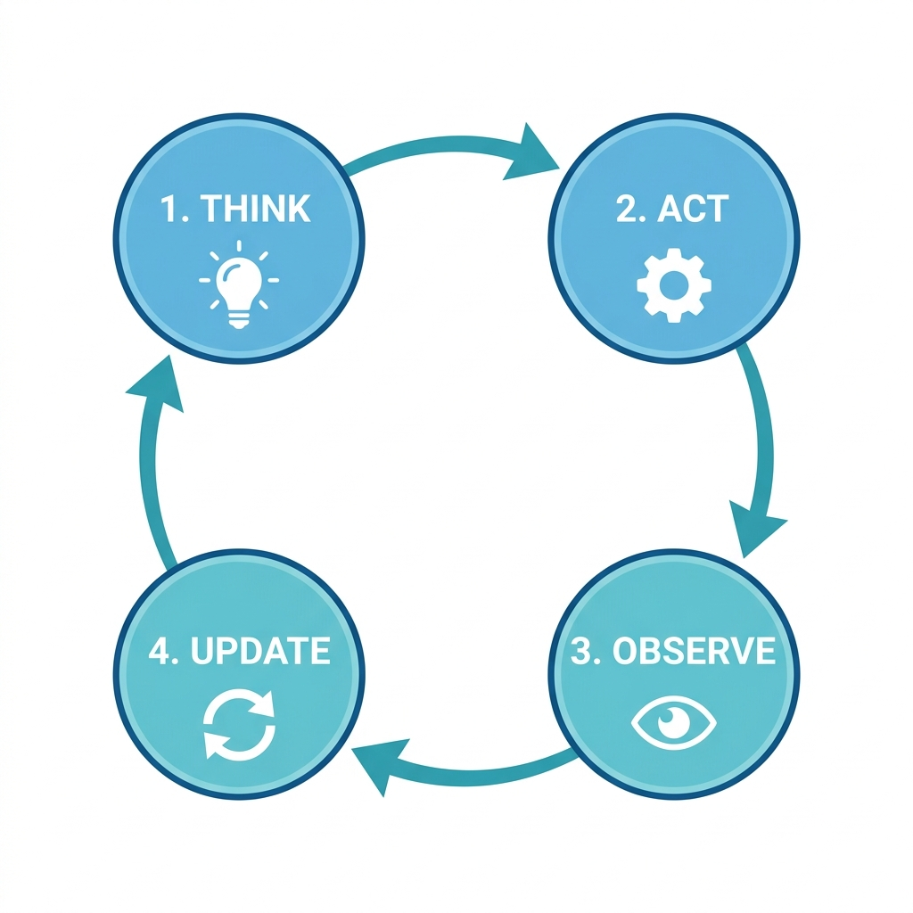
Applied to geospatial tasks, this means an agent can:
- Write a spatial join in Python or DuckDB SQL
- Execute it against a real dataset
- Detect errors (null geometries, CRS mismatches)
- Self-correct and re-run — autonomously
Two Bottlenecks for Autonomous GeoAI
Achieving Autonomous GIS requires solving two fundamentally different problems simultaneously.
Problem 1 · The Agent
Unreliable Execution
Unguided agents hallucinate code, lose spatial context, and violate geographic data contracts. Scaling the model does not fix this.
Problem 2 · The Data
Incompatible Formats
Continuous coordinates and planar geometry lack the discrete, hierarchical structure agents need to reason reliably.
Why Coordinates Break AI Reasoning
LLMs are next-token prediction engines. They have no number sense. Continuous coordinates break their token grammar.
Two points 22 m apart (crossing a digit boundary):
40.9999 → 40.9999
41.0001 → 41.0001
Zero shared tokens. The model sees these as completely unrelated.
Same points as H3 cell IDs:
Spatial proximity is explicitly encoded in the token structure.

My Recent Work: Two Pillars
Two foundational components, one coherent vision for the Automated Geospatial Scientist.
Pillar I · The Reasoning Engine
Dual-Helix Governance
A structured agentic framework (Knowledge, Behavior, Skills) that eliminates drift and enforces reproducibility in geospatial code generation.
→ Presented in Part I
Pillar II · The Standardized Substrate
Discrete Global Grid Systems
A mathematically rigorous tessellation of the Earth into discrete, hierarchical cells — a native, AI-compatible vocabulary for the planet.
→ Presented in Part II
Part I
The Reasoning Pillar:
Dual-Helix Governance
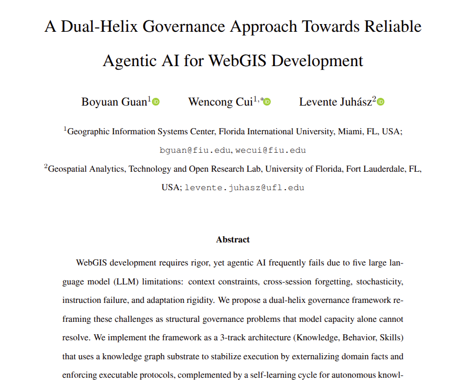
Work in Progress · Under Review
A Dual-Helix Governance Approach Towards Reliable Agentic AI for WebGIS Development
Boyuan Guan, Wencong Cui, Levente Juhász
FIU GIS Center & GATOR Lab, University of Florida
Submitted to Transactions in GIS · Preprint:
arxiv.org/abs/2603.04390
- Open-source toolkit: AgentLoom
- Implemented in a resource-constrained academic lab
- This talk presents the framework + new ablation evidence
Five Structural Failure Modes of LLMs
LLM failures in geospatial engineering are not random — they are predictable, structural, and cannot be solved by scaling alone.
⌖ Context Constraints
Long geospatial workflows exceed the model's context window, causing earlier task specifications to be silently dropped.
⌖ Cross-Session Forgetting
Every new conversation starts with zero memory. Domain knowledge, conventions, and past decisions must be re-established each time.
⌖ Stochasticity
The same prompt can produce different (and incompatible) code on every run — making reproducibility impossible without external constraints.
⌖ Instruction Failure
Complex, multi-step GIS task instructions are partially followed, silently truncated, or reinterpreted in ways that break data pipelines.
⌖ Adaptation Rigidity
Models cannot accumulate project-specific knowledge over time. Every session is a blank slate — there is no learning from past errors.
Existing Workarounds & Their Limits
The community has developed partial mitigations, but none address the root structural problem.
✍️ Prompt Engineering
What it does: Carefully crafts instructions to constrain model behavior for a specific task.
⚠ Limit: Fragile, session-scoped, and non-transferable. Prompts do not persist across sessions and must be re-written for every task variant.
📚 Retrieval-Augmented Generation (RAG)
What it does: Fetches relevant documents at query time and injects them into the context window.
⚠ Limit: Only addresses knowledge retrieval — does not enforce behavioral constraints or skill protocols. The agent can still hallucinate, forget task scope, or produce unreproducible outputs.
🎯 Our Argument
These approaches treat symptoms. The five failure modes are structural governance problems — they require an architectural solution, not better prompts or larger retrieval indices.
The distinction: RAG retrieves facts. Governance enforces contracts — what the agent is allowed to know, do, and how it must behave.
→ We propose the Dual-Helix Framework
The Dual-Helix Architecture

🧠 Knowledge Track
Persistent graph of domain facts and project conventions. Solves forgetting.
📋 Behavior Track
Executable protocols defining role-based constraints. Solves instruction failure.
🛠 Skills Track
Domain-specific tool libraries (e.g., precise CRS handling). Ensures correct methodology.
Case Study I: FutureShorelines WebGIS
A real-world refactoring task — transforming a monolithic codebase into production-ready modular architecture.
📋 The Task
Refactor a 2,265-line monolithic JavaScript codebase for a sea-level rise visualization tool into modular ES6 components. Three conditions: Zero-Shot, Static Context, Full AgentLoom.
🏛 The Lab Context
Resource-constrained academic lab. No dedicated ML engineering team. The framework is designed to let a small team achieve production-grade reliability.
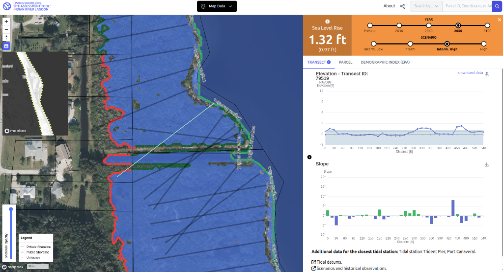
Inside the Graph: Connecting the Nodes
How a specific requirement propagates from a static fact to an executable skill.
1. Knowledge Node
Target CRS = EPSG:3857
The WebGIS platform requires all geometries to be in Web Mercator.
2. Behavior Node
Enforce Reprojection
Always check the CRS of inputs. If not EPSG:3857, reproject before any spatial join.
3. Skill Node
reproject_gdf()
An executable Python tool that safely transforms GeoDataFrames using pyproj.
Result: The agent knows the rule, is instructed to follow it, and has the code to execute it.
Governance Drives Code Quality
Structural constraints significantly improve both maintainability and consistency.
Cyclomatic Complexity
↓ 51% reduction
Maintainability Index
↑ 7 points
Consistency Guarantee
Variance reduction is statistically significant (p = 0.047 vs. Zero-Shot baseline). This is empirical evidence that structural governance, not model scale, drives reliability.

Fig 8: Trial-level consistency across conditions (gpt-5.2).
Case Study II: COVID-19 Risk Mapping
Ablation study on spatial join and normalization workflows.
Baseline
Unguided Agentic AI
(without AgentLoom)
− Skills
Knowledge + Behavior only
− Behaviors
Knowledge + Skills only
− Knowledge
Behavior + Skills only
Full AgentLoom
All three tracks active
📍 The Task: Miami-Dade COVID-19 Risk Mapping
Input:
32,264 COVID-19 case points + 1,583 census block groups
Task:
Spatial join → normalize rates → build interactive WebGIS dashboard
Evaluation:
5-criterion rubric (0–2 per criterion) across 3 independent evaluator runs

Ablation: Skills are the Load-Bearing Column
Task: Miami-Dade COVID-19 Risk Mapping. Scored on 5 rigorous GIS criteria (0-2 scale).
Governance IMPROVES Quality
Full AgentLoom (83%) vs Baseline (40%).
Skills = Critical Element
Removing Skills caused the largest drop — executable spatial protocols matter most.
Only Full AgentLoom consistently handled spatial uncertainty (MAUP, low-pop suppression).
Part II
The Data Pillar:
Discrete Global Grid Systems
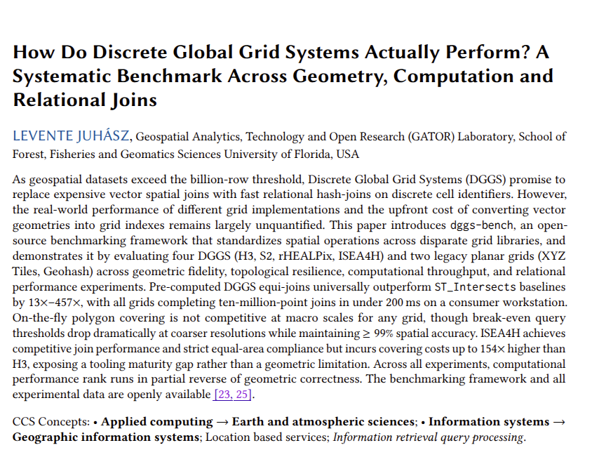
Under Review (ACM TSAS)
How Do Discrete Global Grid Systems Actually Perform? A Systematic Benchmark Across Geometry, Computation and Relational Joins
Levente Juhász
eartharxiv.org/repository/view/12855/
Today: introducing dggs-bench and evaluating 6 grids across 4 experiment families.
The Planar Fallacy in Global GeoAI
Tying AI architectures to flat 2D representations introduces critical geographic biases.
📐 Spatial Sampling Bias
Every flat map distorts the sphere. Planar grids drastically oversample polar regions while undersampling the equator, feeding biased training data to the model.
🌐 Fallacy of Planar Adjacency
Flat representations force hard boundaries (e.g., ±180° longitude). Models must learn artificial "wraparound" corrections for a problem that simply doesn't exist on a sphere.
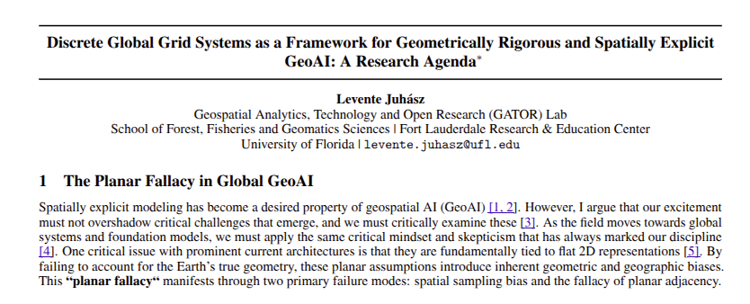
A Technical Legacy, Not a Scientific Truth
Our reliance on 2D planar maps is an artifact of historical constraints, not geographic accuracy.
The Analog Era Constraints
- Maps had to be printed on flat sheets of paper.
- Cartesian coordinates (X, Y) were mathematically simpler to calculate by hand than spherical trigonometry.
- These analog constraints were hard-coded into early GIS architectures in the 1960s.
The Opportunity for GeoAI
Machine learning models do not need paper maps. They do not require math to be optimized for human calculation.
We finally have the computational capability to abandon the planar fallacy and rebuild spatial reasoning on a scientifically rigorous foundation.
Empirical Evidence: The DGGS Advantage
Emerging literature demonstrates significant improvements in global GeoAI modeling.
1. Statistical GeoAI (Random Forests)
Drivers of global irrigation expansion: the role of discrete global grid choice
Wagner, S., Stenzel, F., Krueger, T., & de Wiljes, J. (2024). Hydrology and Earth System Sciences (HESS).
- 28% reduction in global NRMSE (irrigation modeling) using an ISEA3H geodesic grid compared to a 0.5° grid.
- Unbiased sampling: Eliminates high-latitude oversampling, yielding simulated spatial patterns that match observed data perfectly.
2. Deep Learning (HexCNNs)
Hexagonal discrete global grid system enhances model latitudinal spatial generalization and deep learning capabilities
Li, K., & Wang, J. (2026). Big Earth Data.
- Up to 14.1% error reduction at the poles (80°–90°) for surface parameter inversion.
- Topology advantage: Native HexCNN kernel requires only 7 parameters (vs 9 in standard 3×3 CNNs) while significantly mitigating cross-latitudinal overfitting.
From Platonic Solids to the Sphere
The choice of base solid determines the core design trade-off.
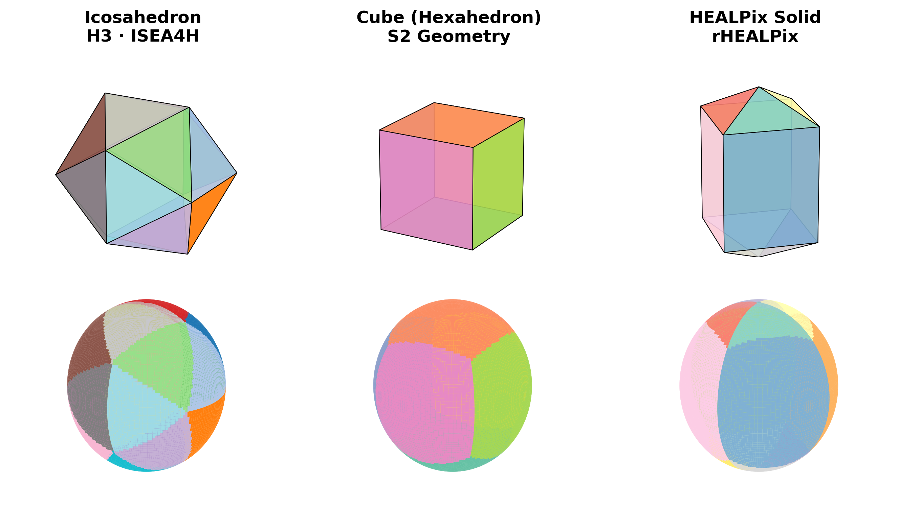
Six DGGS Implementations
We benchmarked 6 grids across 4 experiment families.

Benchmarking Geometric Distortion
Comparing areal and angular preservation across the 6 implementations.
Global Area Ratio (Areal)

Angular Deviation (Isotropy)
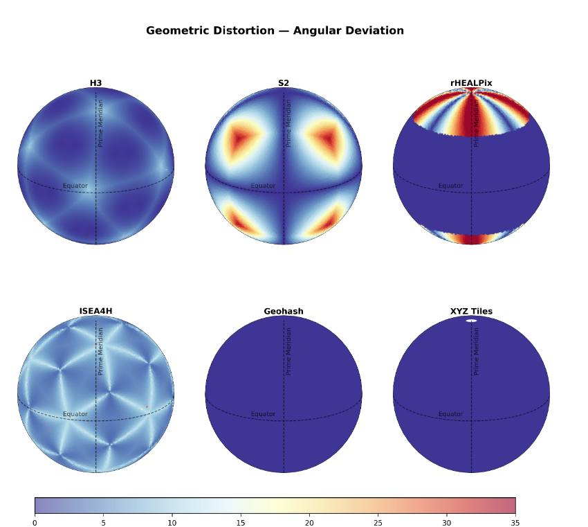
Relational Throughput & The Encoding Tax
Join-by-index provides massive speedups, but calculating coverings incurs an initial cost.
⚡ Join Speedup
Pre-computed DGGS joins achieve massive speedups over traditional vector ST_Intersects (e.g., S2 achieves up to 325× speedup).
⏳ The Encoding Tax
Extracting, Transforming, and Loading (ETL) raw vector data into DGGS coverings is highly intensive. It currently represents the primary computational bottleneck for DGGS pipelines.
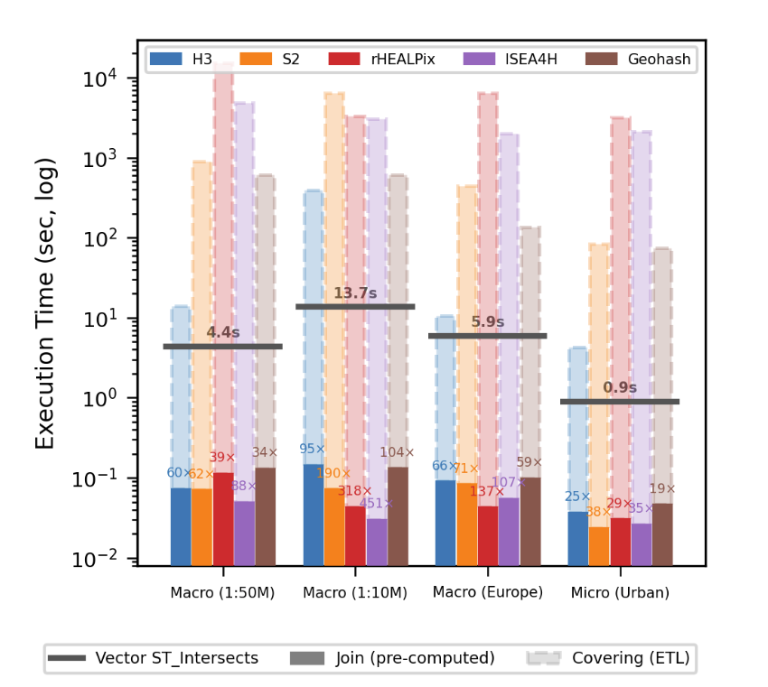
Execution time on log scale (includes Geohash)
Why Invest in DGGS? The Core Benefits
Discrete Global Grid Systems offer a radically different paradigm for spatial reasoning.
1. Scientific Rigor
They can be true equal-area across the globe, completely eliminating spatial sampling bias.
2. Structural Hierarchy
Multi-resolution hierarchy allows seamless scaling from local streets to planetary phenomena.
3. Persistence
Cells are spatially and temporally persistent, acting as static bins for time-series modeling.
4. Computational Speed
Transforms complex geometric spatial joins into ultra-fast 1D relational hash joins.
The Industry Signal
Technology giants traditionally outside the "geospatial" domain are investing heavily in this infrastructure:
- Uber created H3 to manage dynamic global logistics.
- Google created S2 to power planetary-scale indexing.
They invest heavily for a reason. It's time for GIScience to rigorously evaluate how we can leverage this native AI architecture.
Part III
Synthesis &
Take Home Messages
Key Takeaways
1. Agentic AI is Rapidly Emerging
Beyond chatbots, autonomous agents can execute complex, long-horizon geospatial workflows by reasoning and acting iteratively, but we need governance structures to make them reliable.
2. The Planar Fallacy
Conventional 2D coordinate systems inject massive distortion and edge artifacts, fundamentally limiting global-scale machine learning models.
3. DGGS as the Data Pillar
Discrete Global Grids eliminate spatial sampling bias and provide up to a 325× throughput speedup, despite an initial ETL encoding tax.
4. DGGS as the Shared Substrate
Discrete grids offer a unified foundation: they eliminate planar distortion for analytical GeoAI (e.g., Random Forests, CNNs) while providing a fast, reliable execution mechanism for autonomous agents.
The Full Stack
Layer 3 · Application
Climate monitoring, urban risk, epidemiology
Layer 2 · Governance (AgentLoom)
Reliable agentic execution across long-horizon workflows
Layer 1 · Execution & Analytical Engine
Fast relational joins for agents and unbiased structures for analytical GeoAI
Layer 0 · Data Substrate (DGGS Benchmark)
Discrete, hierarchical, equal-area tessellation
University of Szeged | Szegedi Tudományegyetem · 2026
Toward Autonomous Spatial Intelligence
Dual Helix Paper
arxiv.org/abs/2603.04390
DGGS Benchmark
github.com/gatorlab-geo/dggs-bench
Levente Juhász, Ph.D.
Univesity of Florida/IFAS SFFGS | FLREC
levente.juhasz@ufl.edu · gatorlab.io
V. Rész
Szakmai Kerekasztal:
Térinformatika, Oktatás és Kutatási Irányok
A hivatkozásokon túl: Mi számít "sikeres" kutatásnak?
A "Hivatkozás-paradoxon"
A kutatások sikerességét ma nagyrészt az idézettségben mérik (h-index, impakt faktor). De vajon ez a teljes kép?
A Valós Tapasztalat
A legizgalmasabb, leginkább jutalmazó projektek (amelyek a legnagyobb érdeklődést váltják ki a társadalomból vagy a médiából) sokszor alig kapnak formális hivatkozást a hagyományos értelemben.
Null-sziget: Egy Adathibából Lett Jelenség
2022-es publikáció · 6 hivatkozás · Hatalmas médiaérdeklődés (Bloomberg, CNN)
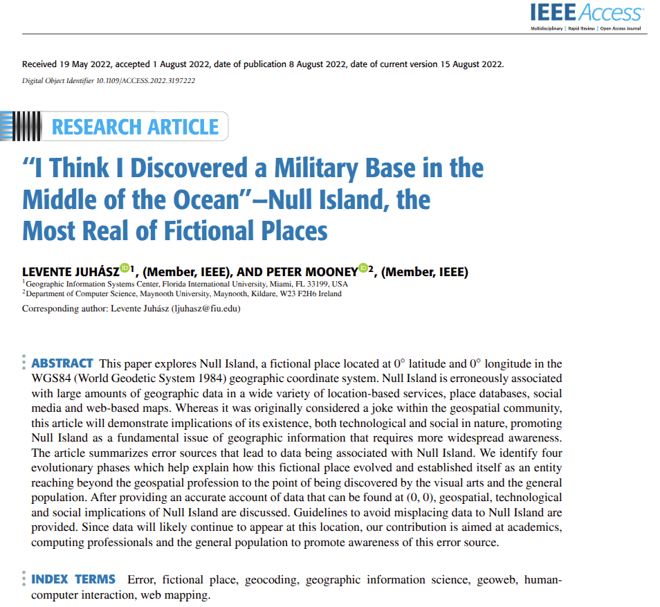
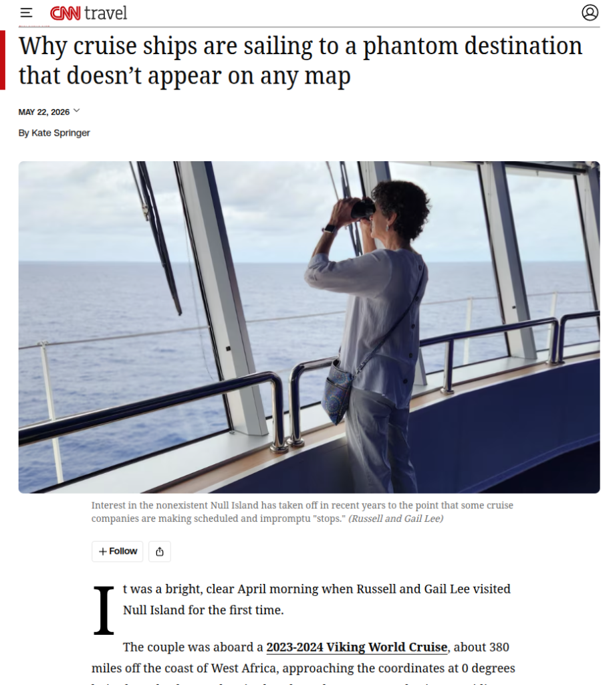
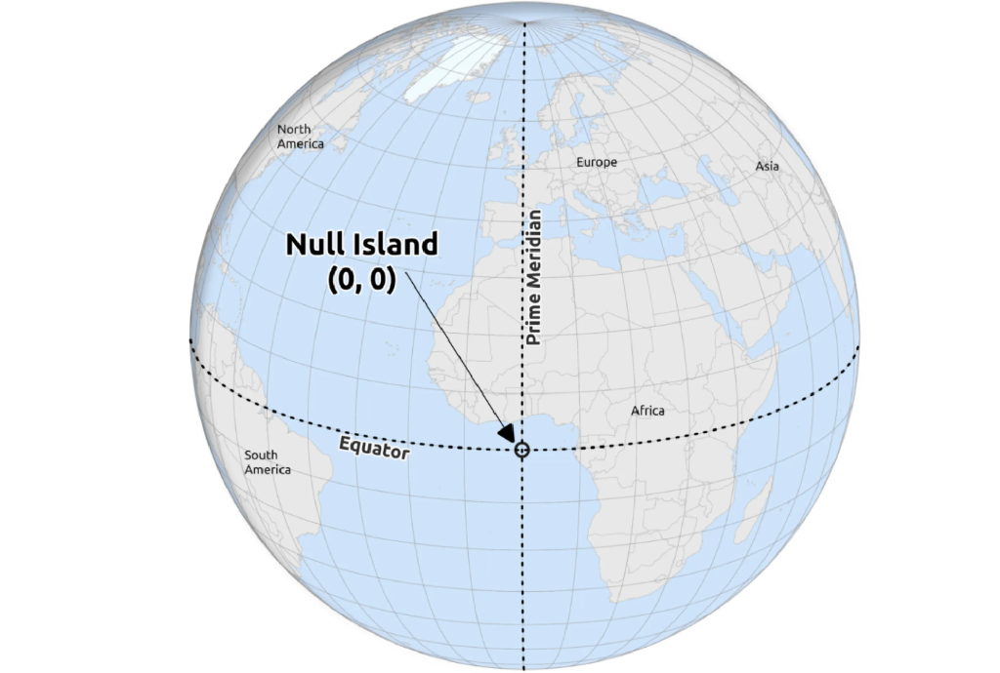
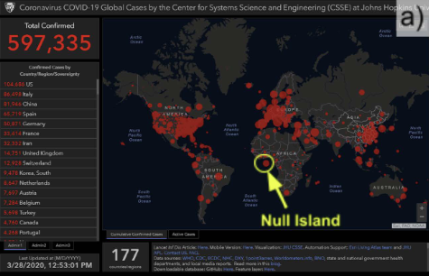
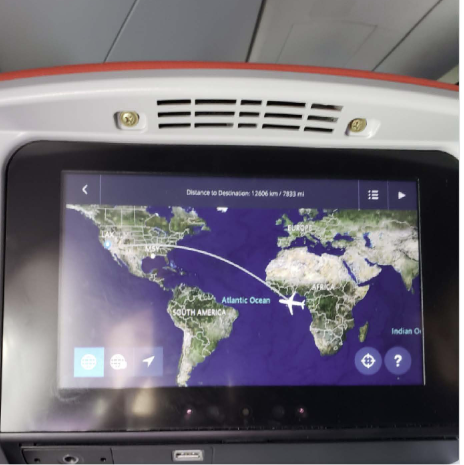
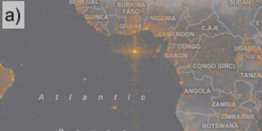
GIScience Publikációs Trendek (2024)
6 hivatkozás, de kritikus fontosságú meta-kutatás a közösségünk számára.
Az Átláthatóság Eszköze
Több tízezer cikk elemzése alapján egy nyílt, interaktív dashboardot készítettünk, amellyel bárki transzparensen értékelheti a térinformatikai folyóiratokat.
Próbáld ki élőben:
gatorlab.io/resources/journals.html
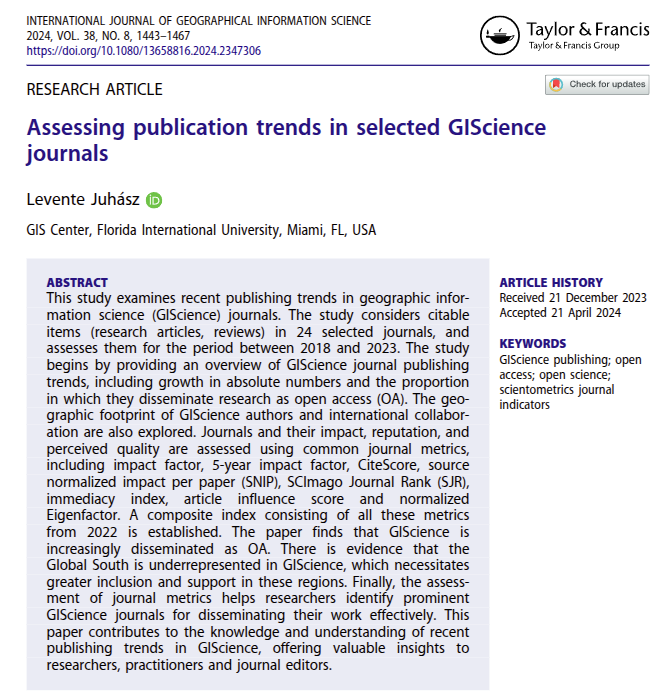
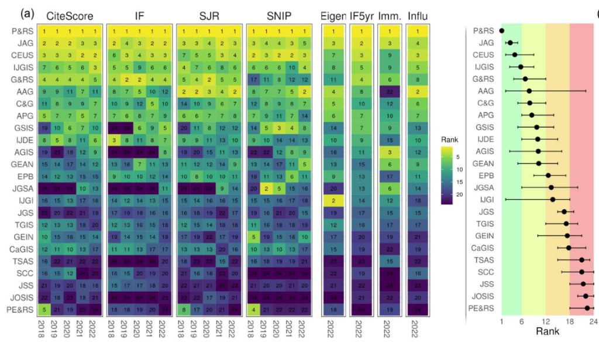
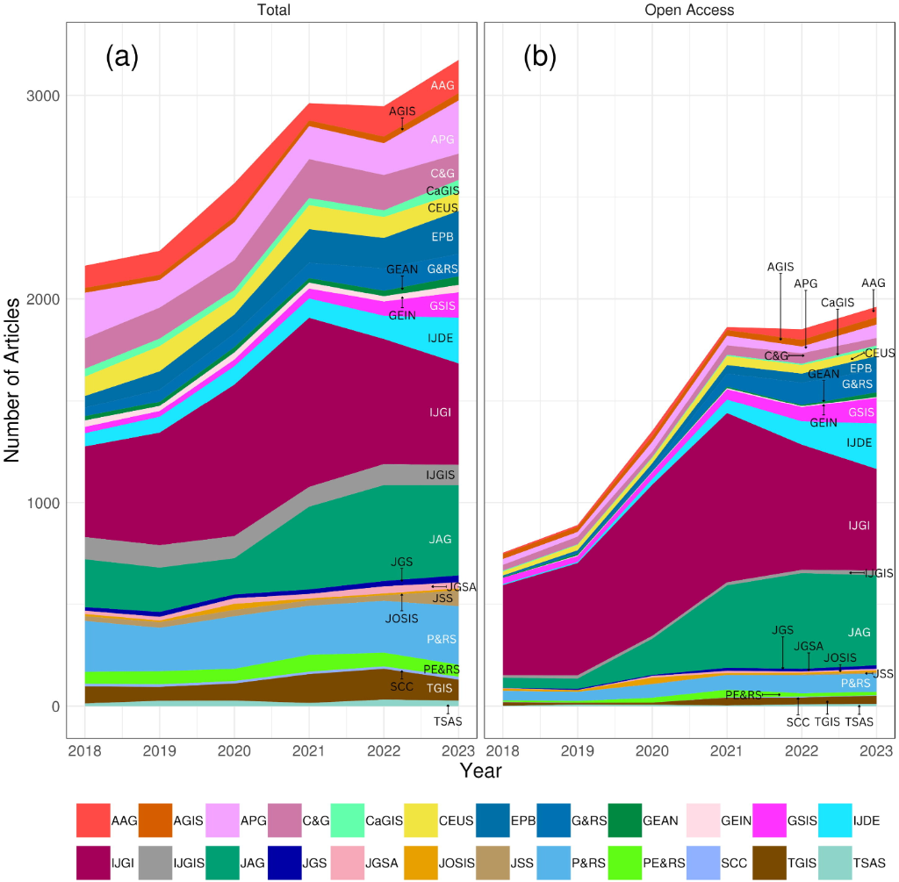
Az Adatok Mögött: KKE a Globális Térképen
Publikációs Aktivitás Lakosságszámhoz Képest
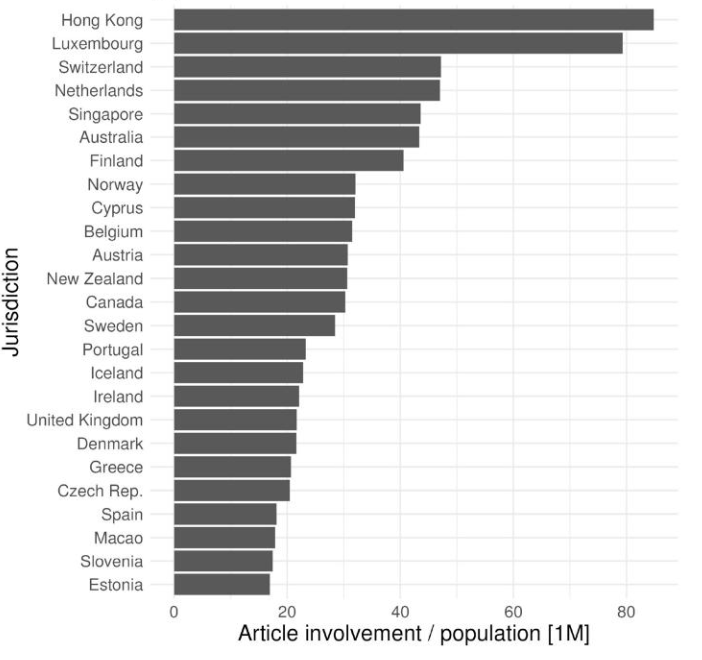
GDP és Publikációs Aktivitás Összefüggése
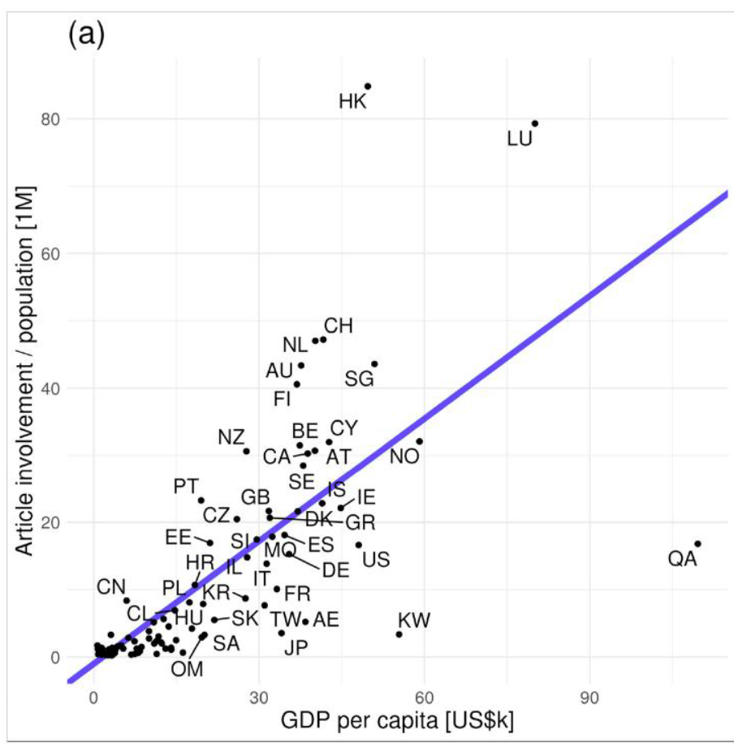
Közép-Kelet-Európa Publikációs Súlya
A Felismerés
A publikációs trendek elemzése kimutatta: Közép-Kelet-Európa (beleértve Magyarországot) le van maradva a nemzetközi publikációk számában, illetve a nemzetközi ko-publikációs hálózatokban kevesebbet vesz részt. A kutatási teljesítmény nemzetközi láthatósága a gazdasági és demográfiai potenciálhoz mérten alulreprezentált.
A Válaszlépés: Készülő ISPRS IJGI Különszám
"Frontiers in GIScience and Geospatial Data Science in Central-Eastern Europe"
Cél: Dedikált, fókuszált platform biztosítása a régió térinformatikai kutatásainak.
Vendégszerkesztők: Dr. Juhász Levente & Dr. Szatmári József, ...
Beszélgetésindító Kérdések
1. Merre tart a GIScience? Magyarországon? USA-ban? Globálisan?
2. Mik az egyetemi oktatás jelenlegi legnagyobb kihívásai?
(Például az AI integrálása vagy a hallgatók felkészítése az új eszközökre)
3. Hogyan tudjuk jobban bevonni a hazai kutatókat a nemzetközi vérkeringésbe?